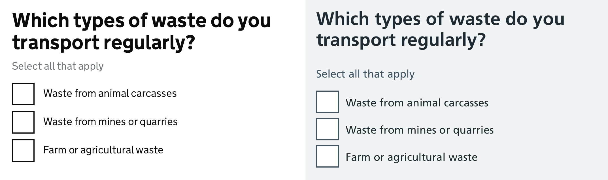

The ‘Amen break’ is the ultimate design pattern
Originally posted on 1st September 2016
Back in the late 60s Gregory Sylvester “G. C.” Coleman, the drummer of Washington DC funk and soul band The Winstons recorded a drum interlude that changed the world…
The Winstons released the single ‘Color Him Father’ in 1969, however it was the 6 second long drum break on the b-side ‘Amen, brother’ that would later become the backdrop to thousands of tracks and define entire genre of music.
The break
The YouTube link below will drop you into ‘Amen, brother’ at 1:26. At the point of reading this you either already know what you’re going to hear or you don’t.
The Winstons ‘Amen, Brother’ — Starting just before the ‘Amen break’
Stemming from breakbeat hardcore, hip-hop, reggae and ragga influences in early 90s rave culture, drum & bass, jungle and breakcore would be somewhat defined by this drum pattern, if not the sample of the this 6-second break itself. However this was far from the first time the ‘Amen break’ was used to create new music.
Sampling and 80s hip-hop
In the mid-to-late 80s, two things happened that set the ‘Amen break’ on it’s course to be the worlds most used drum sample.
The track ‘Amen, brother’ was included in the first official “Ultimate breaks and beats” compilation, a series that would become legendary amongst beat juggling and scratch DJs. These tracks were hand picked, containing the best drum breaks for DJs to live loop over using two turntables.
When affordable digital samplers came a long, they allowed budding producers to sample, loop, edit and manipulate samples from other tracks and found material.
Mix the two things together and you have a recipe for the ‘Amen break’ to become one of the most commonly used beats in late 80s hip-hop.
Prior to the jungle and drum & bass producers speeding the break up, hip-hop producers slowed it down. NWA’s ‘Straight Outta Compton’ is one of the most famous tracks to use a heavily slowed down sample of the ‘Amen break’ but it’s not as immediately recognisable as in some other tracks of the time. On the track ‘Keep it going now’ by Rob Base & DJ EZ Rock you can really hear the pitch of that trademark snare drum cutting through the mix.
Keep it going now’ by Rob Base & DJ EZ Rock
Drum and bass and beyond
There’s simply too many drum and bass tracks to mention that use the ‘Amen break’. The four bars have been used in their original form, albeit sped up on hundreds, if not thousands of tracks.
The break has also been heavily chopped up and re-arranged on both more mainstream tracks like Shy FX’s classic ‘Original Nuttah’ and by underground electronics producers like Venetian Snares and Luke Vibert (whose alter ego ‘Amen Andrews’ only makes tracks that contain the break).
Many of these tracks retain the core trademark sound of the original but put it together in such different ways, using the break has become somewhat of an art form in itself.
Legendary producer Bizzy B has a YouTube video dedicated to chopping the ‘Amen break’
Shy FX’s ‘Original Nuttah’ uses a cut up version of the break
Venetian Snares’ — ‘Szamar madar’ orchestral breakcore masterpiece uses a heavily cut up amen break
How does this relate to design patterns?
For context, I work at the Government Digital Service as a designer on the team that looks after the GOV.UK Design System and it’s frontend codebase GOV.UK Frontend. We exist to provide teams with design, code and guidance for the most commonly shared elements of Government services. This allows teams to focus their time and effort on the things that make their service different.
GitHub is like a sample library
Much like the “Ultimate breaks and beats” compilation, an open source repository is like a free sample library for code. Anyone can look at our code, take it and re-use it in a way that works for them.
For example, the team at NHS Digital were able to re-use the majority of GOV.UK Frontend in the newly released NHS Frontend. They kept the bits that worked for them and changed the things that didn’t.
An example of the checkboxes component on GOV.UK Frontend (left) and NHS Frontend (right)
Patterns can be adapted based on the use case, just like samples can be modified for different genres
One of the most common push backs on design system’s and design patterns is that they can be seen to limit a designer’s creativity or contain overly generic solutions to specific problems.
I would argue that much like using sampled music, they simply give you a starting point or set of constraints to work within. You can adapt or rearrange a pattern to suit your use case, you can make it a prominent part of your design or just let it sit in the background.
If a 6-second drum break from 1969 can be used as the backbone for over 3000 multiple genre spanning tracks, take some time to think about how design patterns can be used to support your work and create new things, not just restrict it.
Amen.
Acknowledgements
- https://mixmag.net/feature/the-20-best-tracks-that-sample-the-amen-break for some track inspiration
- https://en.wikipedia.org/wiki/Amen_break for some of the specific details